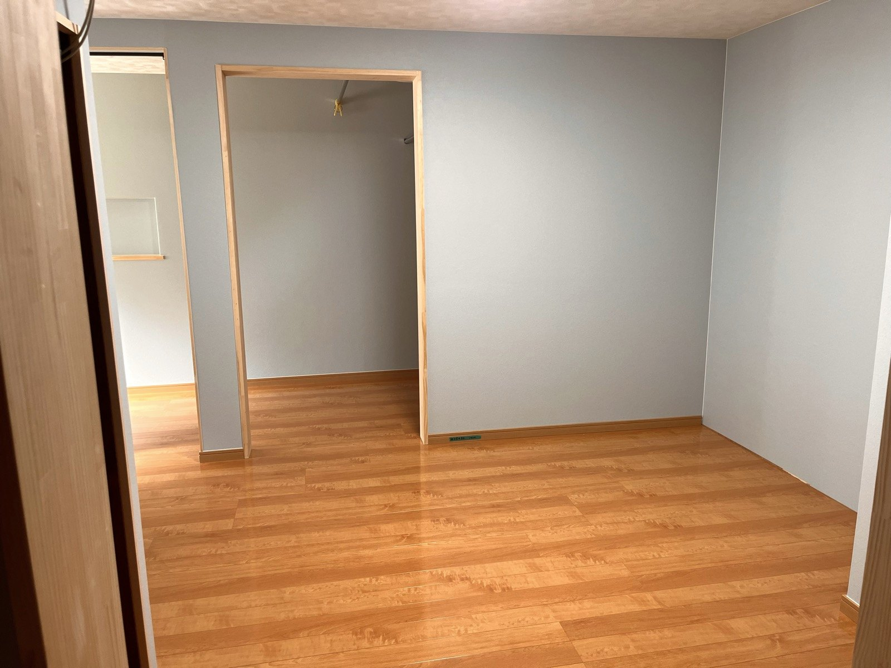
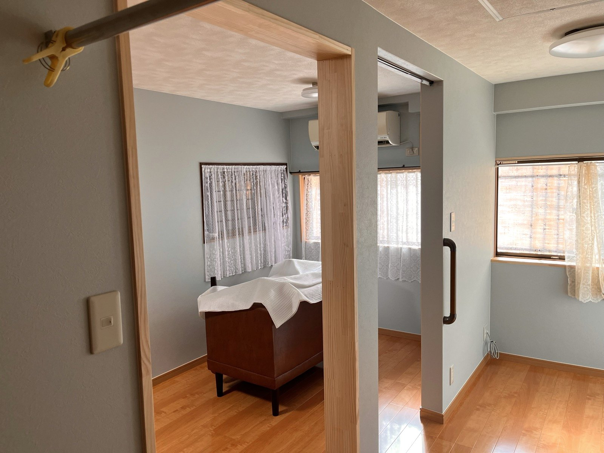
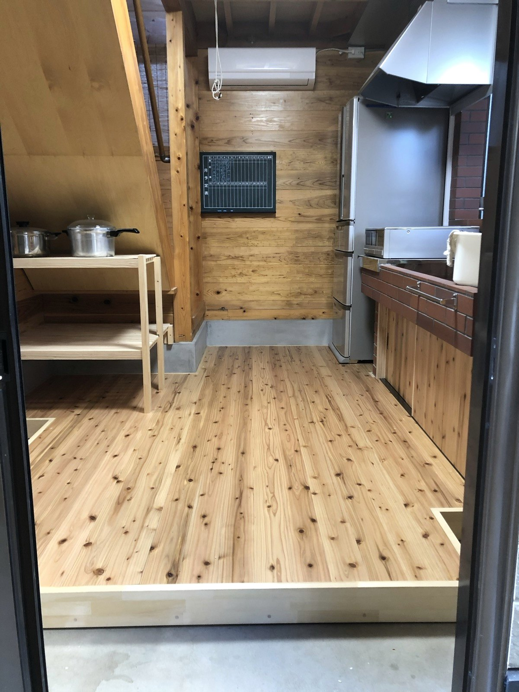
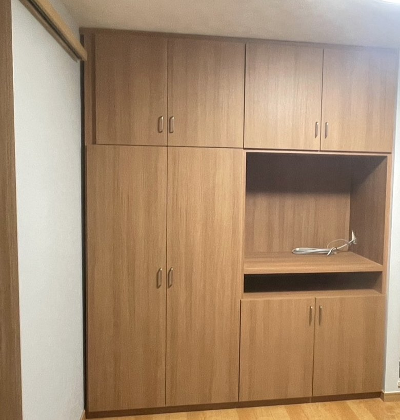
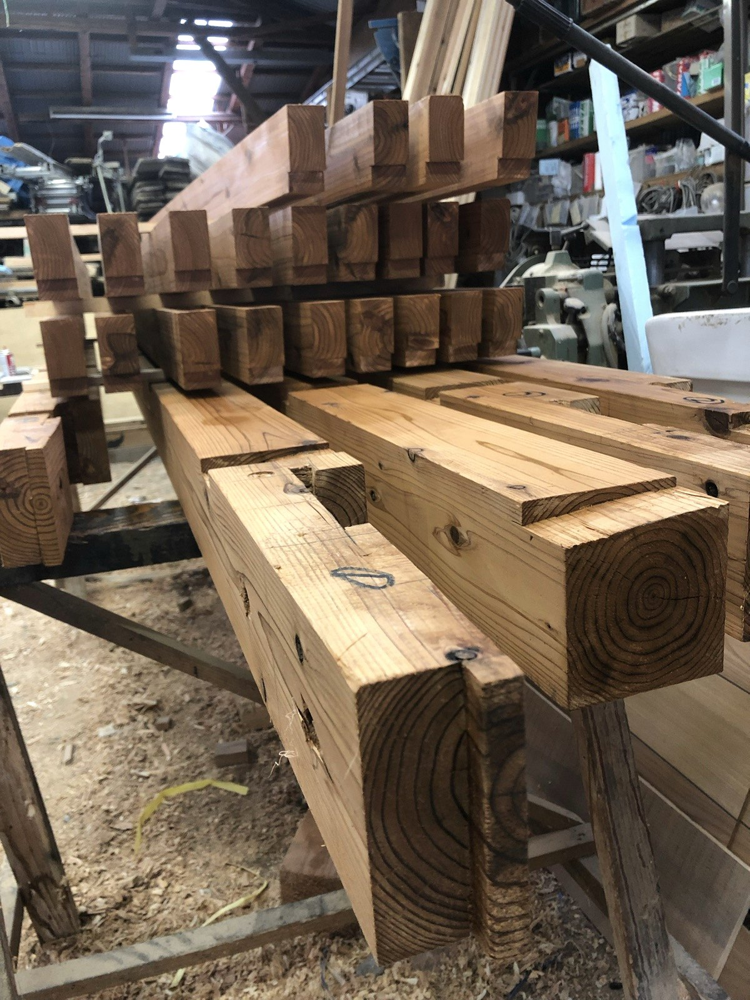
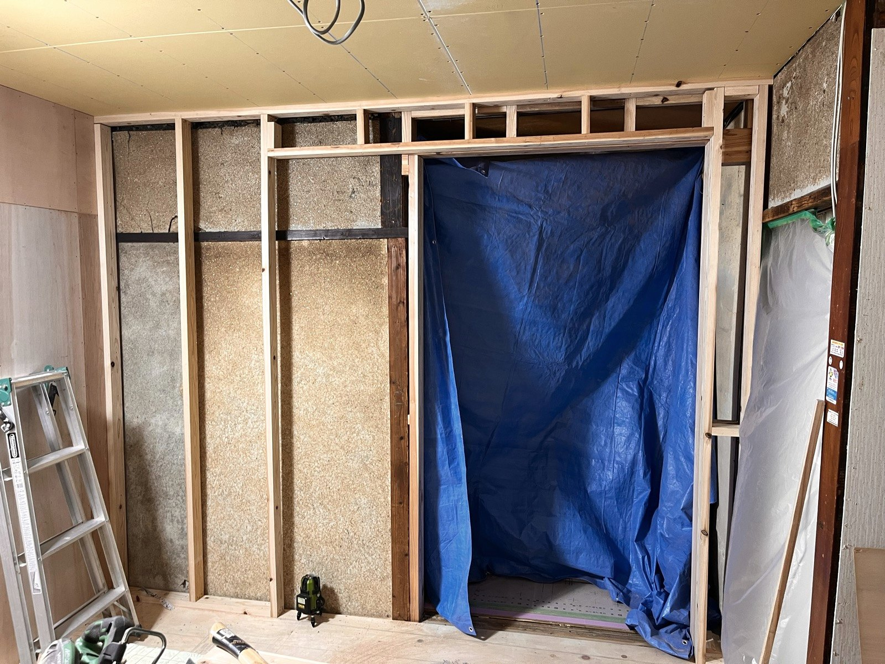
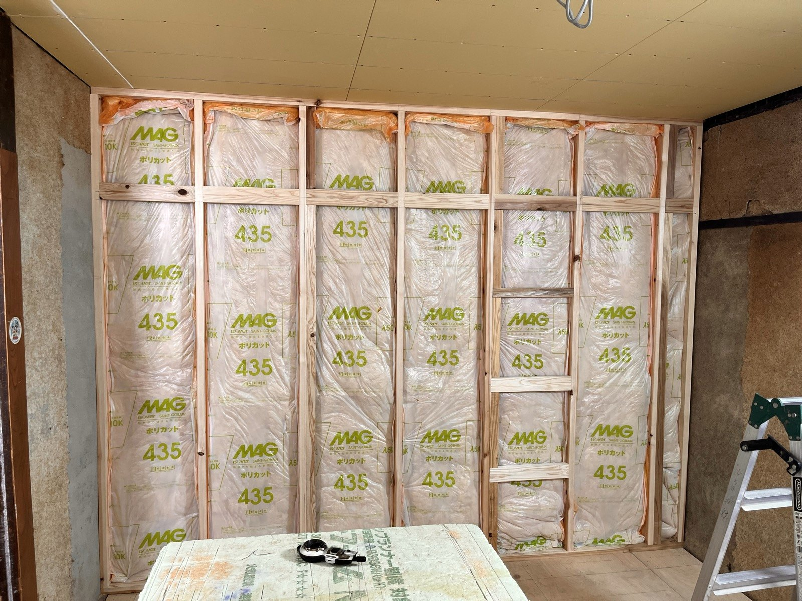
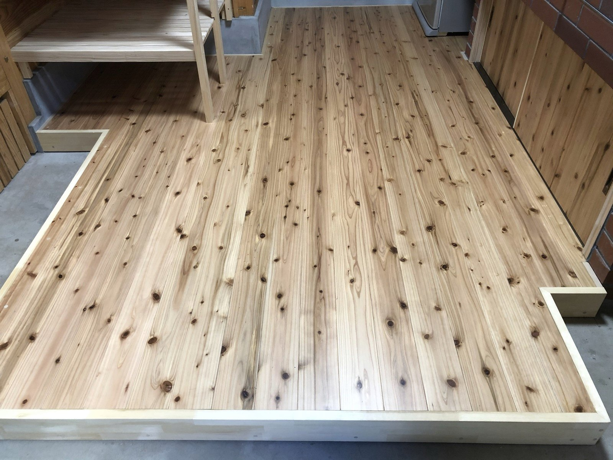

01
床・内装のリフォーム
木目の床と壁の仕上がり。部屋の印象を整える工事の一例です。
修繕・改修、防水、塗装、庭の手入れ。
住まいのお困りごとを、
長崎の大工に直接ご相談ください。
「こんなことも頼める？」から、お気軽に。

施工実績や現場の様子は、
Instagramでご紹介しています。
@nagasaki_carpenter
@nagasaki_carpenter
Instagramで現場の写真を見る ↗
投稿が表示されない場合は、上のボタンからご覧いただけます。
毎日歩く床も、物をしまう場所も。
気になっているところから、
住まいのことを考えてみませんか。

木目の床と壁の仕上がり。部屋の印象を整える工事の一例です。

床や壁、棚に木を使った空間。素材の表情が伝わる一枚です。

壁面を使った収納の一例。しまう物や使い方から、ご相談ください。
気になる場所の写真を送ってみてください。
改善のアドバイスができるかもしれません。
きれいになった部屋だけでなく、
工事の途中にも、大工の仕事があります。
下地を組む。木を加工する。
見えなくなる部分も確かめながら、
住まいに合った修繕を考えます。




小さな修繕から、建物の傷みへの対策まで。
まずは気になっていることを聞かせてください。
「雨漏りしている」「床が傷んでいる」
「庭の草や木を何とかしたい」
気になる場所の写真と、ひとことをどうぞ。
写真がなくてもご相談いただけます。
工事内容や費用は、状況を確認したうえでご案内します。
写真や文章で、お困りごと・ご希望をお送りください。
お話を伺い、必要に応じて現地で確認します。
内容や費用を確認しながら、進め方をご相談します。